전산응용기계제도기능사 (2014-01-26 기출문제)
1과목: 기계재료 및 요소
1. 공구의 합금강을 담금질 및 뜨임처리하여 개선되는 재질의 특성이 아닌 것은?
- 조직의 균질화
- 경도 조절
- 가공성 향상
- 취성 증가
(정답률: 78%)

2. 금속재료를 고온에서 오랜 시간 외력을 걸어놓으면 시간의 경과에 따라 서서히 그 변형이 증가하는 현상은?
- 크리프
- 스트레스
- 스트레인
- 템퍼링
(정답률: 59%)
3. 절삭공구류에서 초경 합금의 특성이 아닌 것은?
- 경도가 높다
- 마모성이 좋다.
- 압축 강도가 높다.
- 고온 경도가 양호하다
(정답률: 63%)
4. 황동의 연신율이 가장 클 때 아연(Zn)의 함유량은 몇 % 정도인가?
- 30
- 40
- 50
- 60
(정답률: 61%)
5. 구상 흑연주철을 조직에 따라 분류했을 때 이에 해당하지 않는 것은?
- 마르텐자이트 형
- 페라이트 형
- 펄라이트 형
- 시멘타이트 형
(정답률: 49%)
6. 주철의 장점이 아닌 것은?
- 압축 강도가 작다.
- 절삭 가공이 쉽다.
- 주조성이 우수하다.
- 마찰 저항이 우수하다.
(정답률: 66%)
7. 합금의 종류 중 고용융점 합금에 해당하는 것은?
- 티탄 합금
- 텅스텐 합금
- 마그네슘 합금
- 알루미늄 합금
(정답률: 68%)
8. 다음 중 구름 베어링의 특성이 아닌 것은?
- 감쇠력이 작아 충격 흡수력이 작다.
- 축심의 변동이 작다.
- 표준형 양산품으로 호환성이 높다.
- 일반적으로 소음이 작다.
(정답률: 66%)
9. 지름이 50mm 축에 10mm인 성크 키를 설치했을 때, 일반적으로 전단하중만을 받을 경우 키가 파손되지 않으려면 키의 길이는 몇 mm인가?
- 25mm
- 75mm
- 150mm
- 200mm
(정답률: 52%)
10. 인장응력을 구하는 식으로 옳은 것은?(단, A는 단면적, W는 인장하중이다.)
- A x W
- A + W
- A/W
- W/A
(정답률: 74%)
2과목: 기계가공법 및 안전관리
11. 롤링 베어링의 내륜이 고정되는 곳은?
- 저널
- 하우징
- 궤도면
- 리테이너
(정답률: 50%)
12. 기계재료의 단단한 정도를 측정하는 가장 적합한 시험법은?
- 경도시험
- 수축시험
- 파괴시험
- 굽힘시험
(정답률: 84%)
13. 자동차의 스티어링 장치, 수치제어 공작기계의 공구대, 이송장치 등에 사용되는 나사는?
- 둥근나사
- 볼나사
- 유니파이나사
- 미터나사
(정답률: 59%)
14. 모듈 5, 잇수가 40인 표준 평기어의 이끝원 지름은 몇 mm인가?
- 200mm
- 210mm
- 220mm
- 240mm
(정답률: 59%)
15. 두 축이 평행하고 거리가 아주 가까울 때 각 속도의 변동없이 토크를 전달할 경우 사용되는 커플링은?
- 고정 커플링(fixed coupling)
- 플랙시블 커플링(flexible coupling)
- 올덤 커플링(Oldham's coupling)
- 유니버설 커플링(universal coupling)
(정답률: 57%)
16. 다음 중 테이블이 일정한 각도로 선회할 수 있는 구조로 기어 등 복잡한 제품을 가공할 수 있는 것은?
- 플레인 밀링 머신(plain milling machine)
- 만능 밀링 머신(universal milling machine)
- 생산형 밀링 머신(production milling machine)
- 플라노 밀러(plano miller)
(정답률: 79%)
17. 선반가공에서 회전수를 구하는 공식이 N = 1000V/πD라 할 때 이 공식의 표기가 틀린 것은?
- N = 회전수(r/min = rpm)
- π = 원주율
- D = 공작물의 반지름(mm)
- V = 절삭속도(m/min)
(정답률: 80%)
18. 드릴링 머신에서 볼트나 너트를 체결하기 곤란한 표면을 평탄하게 가공하여 체결이 잘되도록 하는 것은?
- 리밍
- 태핑
- 카운터 싱킹
- 스폿 페이싱
(정답률: 55%)
19. 일반적인 연삭숫돌 검사 방법의 종류가 아닌 것은?
- 초음파 검사
- 음향 검사
- 회전 검사
- 균형 검사
(정답률: 50%)
20. 윤활제의 급유 방법이 아닌 것은?
- 핸드 급유법
- 적하 급유법
- 냉각 급유법
- 분무 급유법
(정답률: 63%)
21. 절삭공구에서 구성인선의 발생순서로 맞는 것은?
- 발생 → 성장 → 탈락 → 분열
- 성장 → 발생 → 탈락 → 분열
- 발생 → 성장 → 분열 → 탈락
- 성장 → 탈락 → 발생 → 분열
(정답률: 75%)
22. 다음 [그림]과 같은 테이퍼를 선반에서 가공하려고 한다. 심압대를 편위시켜 가공하려면 심압대를 몇 mm 이동시켜야 하는가?(단. 단위는 mm 이다.)
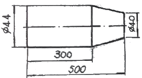
- 5
- 6
- 8
- 10
(정답률: 44%)
23. 기어절삭기로 가공된 기어의 면을 매끄럽고 정밀하게 다음질하기 위해 홈붙이날을 가진 커터로 다듬는 가공방법은?
- 호빙
- 호닝
- 기어셰이빙
- 래핑
(정답률: 69%)
24. 공구 연삭기의 종류에 해당되지 않는 것은?
- 드릴 연삭기
- 바이트 연삭기
- 초경공구 연삭기
- 기어 연삭기
(정답률: 57%)
25. 다음 중 가공물을 양극으로 전해핵에 담그고 전기저항이 적은 구리, 아연을 음극으로 하여 전류를 흘려서 전기에 의한 용해작용을 이용하여 가공하는 가공법은?
- 전해연마
- 전해연삭
- 전해가공
- 전주가공
(정답률: 56%)
3과목: 기계제도
26. 기하공차의 종류 중 적용하는 형체가 관련 형체에 속하지 않는 것은?
- 자세 공차
- 모양 공차
- 위치 공차
- 흔들림 공차
(정답률: 45%)
27. 다음은 제3각법으로 그린 정투상도이다. 입체도로 옳은 것은?
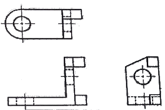
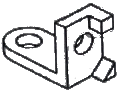
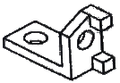
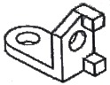
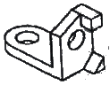
(정답률: 86%)
28. 다음 중 '가는 선 : 굵은 선 : 아주 굵은 선' 굵기의 비율이 옳은 것은?
- 1 : 2 : 4
- 1 : 3 : 4
- 1 : 3 : 6
- 1 : 4 : 8
(정답률: 76%)
29. 모양공차를 표기할 때 그림과 같은 공차 기입 틀에 기입하는 내용은?
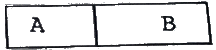
- A : 공차값, B : 공차의 종류 기호
- A : 공차의 종류 기호, B : 테이텀 문자기호
- A : 데이텀 문자기호, B : 공차값
- A : 공차의 종류 기호, B : 공차값
(정답률: 62%)
30. 도면에 사용한 선의 용도 중 특수한 가공을 하는 부분 등 특별한 요구 사항을 적용할 범위를 표시하는데 쓰이는 선은?
- 가는 1점 쇄선
- 가는 2점 쇄선
- 굵은 1점 쇄선
- 굵은 2점 쇄선
(정답률: 70%)
31. 선의 종류에 따른 용도의 설명으로 틀린 것은?
- 굵은 실선 - 외형선으로 사용한다.
- 가는 실선 : 치수선으로 사용한다.
- 파선 : 숨은선으로 사용한다.
- 굵은 1점 쇄선 - 단면의 무게 중심선으로 사용한다.
(정답률: 68%)
32. 좌우 또는 상하가 대칭인 물체의 1/4을 잘라내고 중심섬을 기준으로 외형도와 내부 단면도를 나타내는 단면의 도시 방법은?
- 한쪽 단면도
- 부분 단면도
- 회전 단면도
- 온 단면도
(정답률: 76%)
33. 투상도의 선택방법에 대한 설명으로 틀린 것은?
- 조립도 등 주로 기능을 나타내는 도면에서는 대상물을 사용하는 상태로 놓고 그린다.
- 부품을 가공하기 위한 도면에서는 가공 공정에서 대상 물이 놓인 상태로 그린다.
- 주 투상도에서는 대상물의 모양이나 기능을 가장 뚜렷하게 나타내는 면을 그린다.
- 주 투상도를 보충하는 다른 투상도는 명확하게 이해를 위해 되도록 많이 그린다.
(정답률: 83%)
34. 그림과 같은 지시 기호에서 "b"에 들어갈 지시 사항으로 옳은 것은?
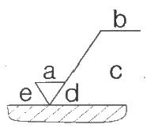
- 가공 방법
- 표면 파상도
- 줄무늬 방향 기호
- 컷오프값ㆍ평가길이
(정답률: 69%)
35. 다음 치수 보조 기호에 관한 내용으로 틀린 것은?
- C : 45°의 모떼기
- D : 판의 두께
- □ : 정사각형 변의 길이
- : 원호의 길이
(정답률: 77%)
36. 기준치수가 30, 최대허용치수가 29.9, 최소허용치수가 29.8일 때 아래치수허용차는?
- -0.1
- -0.2
- +0.1
- +0.2
(정답률: 70%)
37. 최대 허용 치수와 최소 허용 치수의 차를 무엇이라고 하는가?
- 치수 공차
- 끼워맞춤
- 실치수
- 기준선
(정답률: 86%)
38. 투상법의 종류 중 정투상법에 속하는 것은?
- 등각투상법
- 제3각법
- 사투상법
- 투시도법
(정답률: 76%)
39. 가공 방법에 대한 기호가 잘못 짝지어진 것은?
- 용접 : W
- 단조 : F
- 압연 : E
- 전조 : RL
(정답률: 47%)
40. 도면을 마이크로 필름에 촬영하거나 복사할 때의 편의를 위하여 도면의 위치결정에 편리하도록 도면에 표시하는 양식은?
- 재단 마크
- 중심 마크
- 도면의 구역
- 방향 마크
(정답률: 76%)
41. 다음 중 알루미늄 합금주물의 재료 표시 기호는?
- ALBrC1
- ALDC1
- AC1A
- PBC2
(정답률: 46%)
42. 지름과 반지름의 표시방법에 대한 설명 중 틀린 것은?
- 원 지름의 기호는 ø로 나타낸다.
- 원 반지름의 기호는 R 로 나타낸다.
- 구의 지름은 치수를 기입할 때는 Gø를 쓴다.
- 구의 반지름은 치수를 기입할 때는 SR을 쓴다.
(정답률: 87%)
43. 다음 입체도에서 화살표 방향이 정면일 경우 정투상도의 평면도로 옳은 것은?
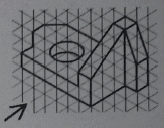
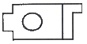
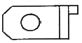
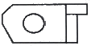
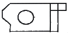
(정답률: 85%)
44. 끼워맞춤의 표시 방법을 설명한 것 중 틀린 것은?
- ø20H7 : 지름이 20인 구멍으로 7등급의 IT공차를 가짐
- ø20h6 : 지름이 20인 축으로 6등급의 IT 공차를 가짐
- ø20H7/g6 : 지름이 20인 H7 구멍과 g6 축이 헐거운 끼워맞춤으로 결합되어 있음을 나타냄
- ø20H7/f6 : 지름이 20인 H7 구멍과 f6 축이 중간 끼워맞춤으로 결함되어 있음을 나타냄
(정답률: 68%)
45. 도면이 구비하여야 할 기본 요건이 아닌 것은?
- 보는 사람이 이해하기 쉬운 도면
- 그린 사람이 임의로 그린 도면
- 표면정도, 재질, 가공 방법 등의 정보성을 포함한 도면
- 대상물의 크기, 모양, 자세, 위치 등의 정보성을 포함한 도면
(정답률: 89%)
46. 기어의 도시 방법을 나타낸 것 중 틀린 것은?
- 이끝원은 굵은 실선으로 그린다.
- 피치원은 가는 1점 쇄선으로 그린다.
- 단면으로 표시할 때 이뿌리원은 가는 실선으로 그린다.
- 잇줄 방향은 보통 3개의 가는 실선으로 그린다.
(정답률: 61%)
47. 평행키 끝부분의 형식에 대한 설명으로 틀린 것은?
- 끝부분 형식에 대한 지정이 없는 경우는 양쪽 네모형으로 본다.
- 양쪽 둥근형은 기호 A를 사용한다.
- 양쪽 네모형은 기호 S를 사용한다.
- 한쪽 둥근형은 기호 C를 사용한다.
(정답률: 60%)
48. 나사의 제도시 불완전 나사부와 완전 나사부의 경계를 나타내는 선을 그릴 때 사용하는 선의 종류는?
- 굵은 파선
- 굵은 1점 쇄선
- 가는 실선
- 굵은 실선
(정답률: 61%)
49. 평벨트 풀리의 도시방법이 아닌 것은?
- 암의 단면형은 도형의 안이나 밖에 회전 도시 단면도로 도시한다.
- 풀리는 축직각 방향의 투상을 주투상도로 도시할 수 있다.
- 풀리와 같이 대칭인 것은 그 일부만을 도시할 수 있다.
- 암은 길이방향으로 절단하여 단면을 도시한다.
(정답률: 72%)
50. 베어링의 안지름 번호를 부여하는 방법 중 틀린 것은?
- 안지름 치수가 1, 2, 3, 4mm 인 경우 안지름 번호는 1, 2, 3, 4 이다.
- 안지름 치수가 10, 12, 15, 17mm 인 경우 안지름 번호는 01, 02, 03, 04 이다.
- 안지름 치수가 20mm 이상 480mm 이하인 경우 5로 나눈값을 안지름 번호로 사용한다.
- 안지름 치수가 500mm 이상인 경우 "/안지름 치수"를 안지름 번호로 사용한다.
(정답률: 65%)
51. 아래 그림이 나타내는 용접 이음의 종류는?
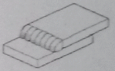
- 모서리 이음
- 겹치기 이음
- 맞대기 이음
- 플랜지 이음
(정답률: 66%)
52. 축의 도시 방법에 대한 설명으로 틀린 것은?
- 가공 방향을 고려하여 도시하는 것이 좋다.
- 축은 길이 방향으로 절단하여 온 단면도를 표현하지 않는다.
- 빗줄 널링의 경우에는 축선에 대하여 30°로 엇갈리게 그린다.
- 긴 축은 중간을 파단하여 짧게 표현하고, 치수 기입은 도면상에 그려진 길이로 나타낸다.
(정답률: 51%)
53. 코일 스프링 도시의 원칙 설명으로 틀린 것은?
- 스프링은 원칙적으로 하중이 걸린 상태로 도시한다.
- 하중과 높이 또는 휨과의 관계를 표시할 필요가 있을 때는 선도 또는 요목표에 표시한다.
- 특별한 단서가 없는 한 모두 오른쪽 감기로 도시한다.
- 스프링의 종류와 모양만을 간략도로 도시할 때에는 재료의 중심선만을 굵은 실선으로 그린다.
(정답률: 68%)
54. 아래 그림음 표준 스퍼기어 요목표 이다. (1), (2)에 들어 갈 숫자로 옳은 것은?
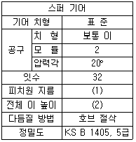
- (1) : ø64 , (2) : 4.5
- (1) : ø40 , (2) : 4
- (1) : ø40 , (2) : 4.5
- (1) : ø64 , (2) : 4
(정답률: 71%)
55. 다음 관 이름의 그림 기호 중 플랜지식 이음은?
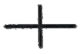
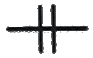
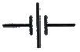
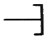
(정답률: 56%)
56. 인치계 사다리꼴 나사의 나사산 각도는?
- 29°
- 30°
- 55°
- 60°
(정답률: 59%)
57. 다음 중 기계설계 CAD에서 사용하는 3차원 모델링 방법이라고 할 수 없는 것은?
- 와이어프레임 모델링(wire frame modeling)
- 오브젝트 모델링(object modeling)
- 솔리드 모델링(solid modeling)
- 서피스 모델링(surface modeling)
(정답률: 70%)
58. 스스로 빛을 내는 자기발광형 디스플레이로서 시야각이 넓고 응답시간도 빠르며 백라이트가 필요 없기 때문에 두께를 얇게 할 수 있는 디스플레이는?
- TFT-LCD
- 플라즈마 디스플레이
- OLED
- 래스터스캔 디스플레이
(정답률: 76%)
59. CAD를 2차원 평면에서 원을 정의하고자 한다. 다음 중 특정 원을 정의할 수 없는 것은?
- 원의 반지름과 원을 지나는 하나의 접선으로 정의
- 원의 중심점과 반지름으로 정의
- 원의 중심점과 원을 지나는 하나의 접선으로 정의
- 원을 지나는 3개의 점으로 정의
(정답률: 47%)
60. 다음 컴퓨터 장치 중 해당 장치가 잘못 연결된 것은?
- 주기억장치 : 하드디스크
- 보조기억장치 : USB 메모리
- 입력장치 : 태블릿
- 출력장치 : LCD
(정답률: 48%)